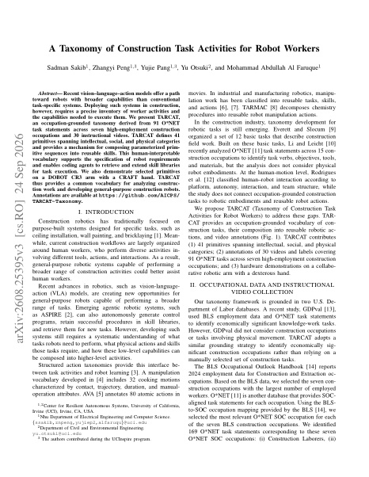

TARCAT
A Taxonomy of Construction Task Activities for Robot Workers
IROS 2026 · 5th Workshop on Future of Construction

Overview
Construction instructions describe whole jobs, while a robot needs smaller actions it can execute. TARCAT connects occupational task descriptions, observed activities, and reusable skills.
From a task to a skill
The authors examined 91 O*NET task statements and 30 instructional videos. They organized 41 primitives into 12 groups. In the drilling example, the worker positions the drill, presses its trigger, and pushes the bit into the workpiece. The annotation preserves the workpiece as a variable so the same skill can describe another job.
Physical demonstrations

Paper

A Taxonomy of Construction Task Activities for Robot Workers
Sadman Sakib, Zhangyi Peng, Yujie Pang, Yu Otsuki, Mohammad Abdullah Al Faruque
IROS 2026 · 5th Workshop on Future of Construction
BibTeX
@misc{sakib2026tarcat,
title = {A Taxonomy of Construction Task Activities for Robot Workers},
author = {Sakib, Sadman and Peng, Zhangyi and Pang, Yujie and Otsuki, Yu and Al Faruque, Mohammad Abdullah},
year = {2026},
eprint = {2608.25395},
archivePrefix = {arXiv},
primaryClass = {cs.RO},
url = {https://arxiv.org/abs/2608.25395}
}